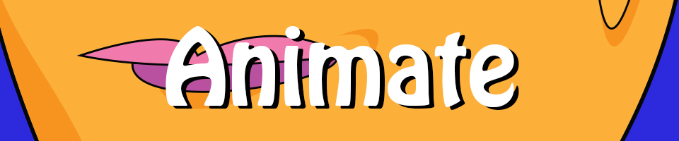

Home |
Photoshop |
Vector |
Animate |
In-Design |
Contact
And then it moved… Animation has always fascinated me. Ever since growing up with cartoons like Futurama, Home Movies, Spongebob Squarepants and many others, I’ve always longed to be able to tell fun stories with ridiculous characters. I chose this story of a man plugging in and powering up this incredibly over the top amp and blowing up the world with his massive E MAJOR CHORD because it didnt seem like it would need any time-consuming frame-by-frame animation and stick to only a few angles. Though I had to make way more elements and spend a lot more time on everything than I initially thought I might. Animation is a doosey but so so rewarding.